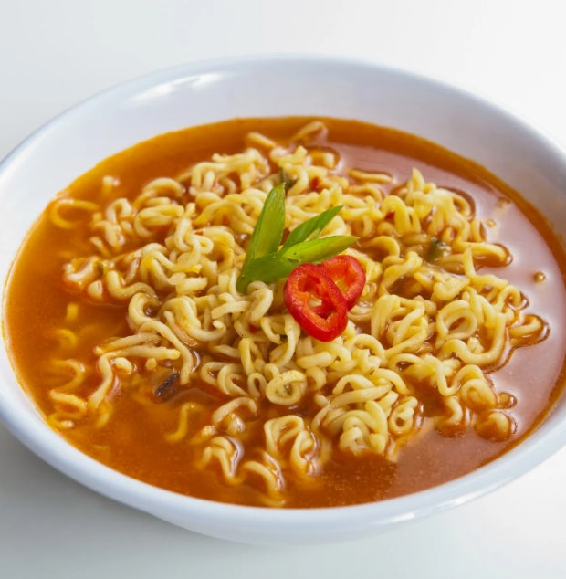
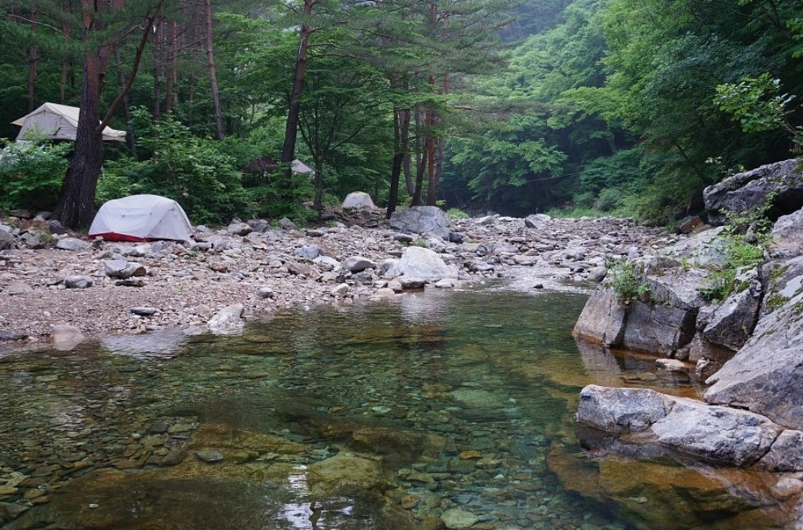
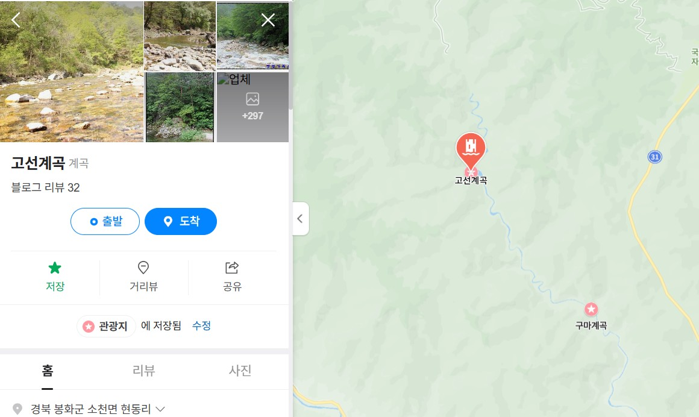
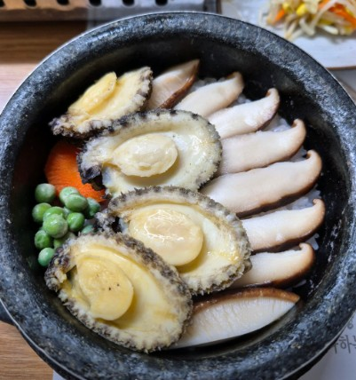
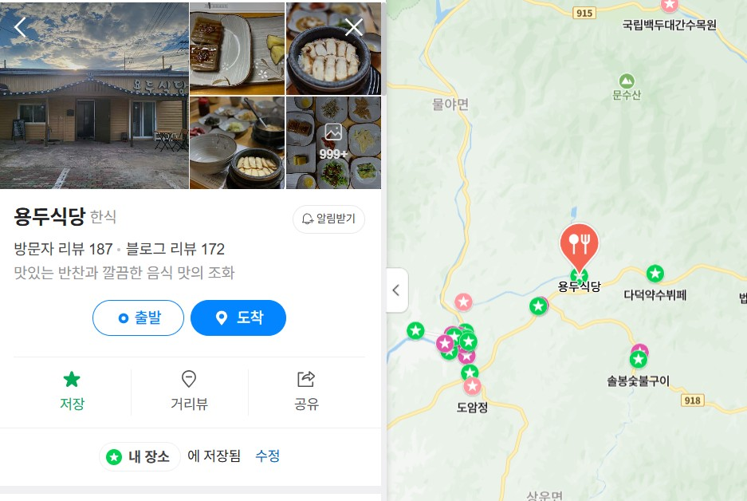
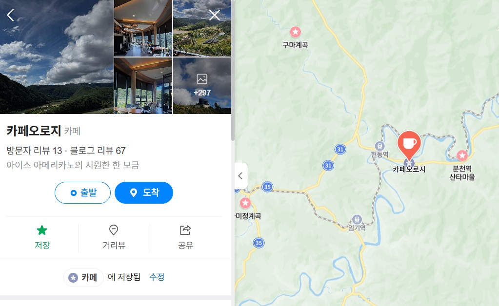

봉화 일정
5월 24일 토요일
- 오전 8시

라면끓여먹기
- 오전 10시

구마계곡(고선계곡) - 경북 봉화군 소천면 현동리
태백산(1,567m)에서 발원한 물줄기가 20km에 걸쳐 흘러내려 계곡 중 그 길이가 가장 긴 원시림 계곡
- 오후 1시

용두식당 - 경북 봉화군 봉성면 다덕로 526-4
봉화하면 버섯! 버섯학교도 있다구~
- 오후 3시

카페오로지 - 경북 봉화군 소천면 현동리 283-4
뷰지리는 카페
- 해산!!!!!!!!!!!!!!